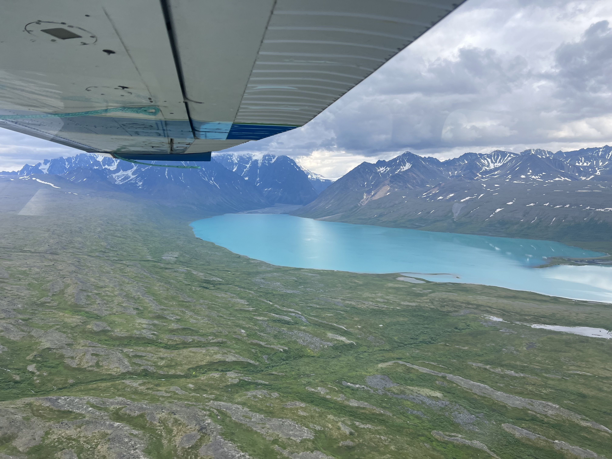
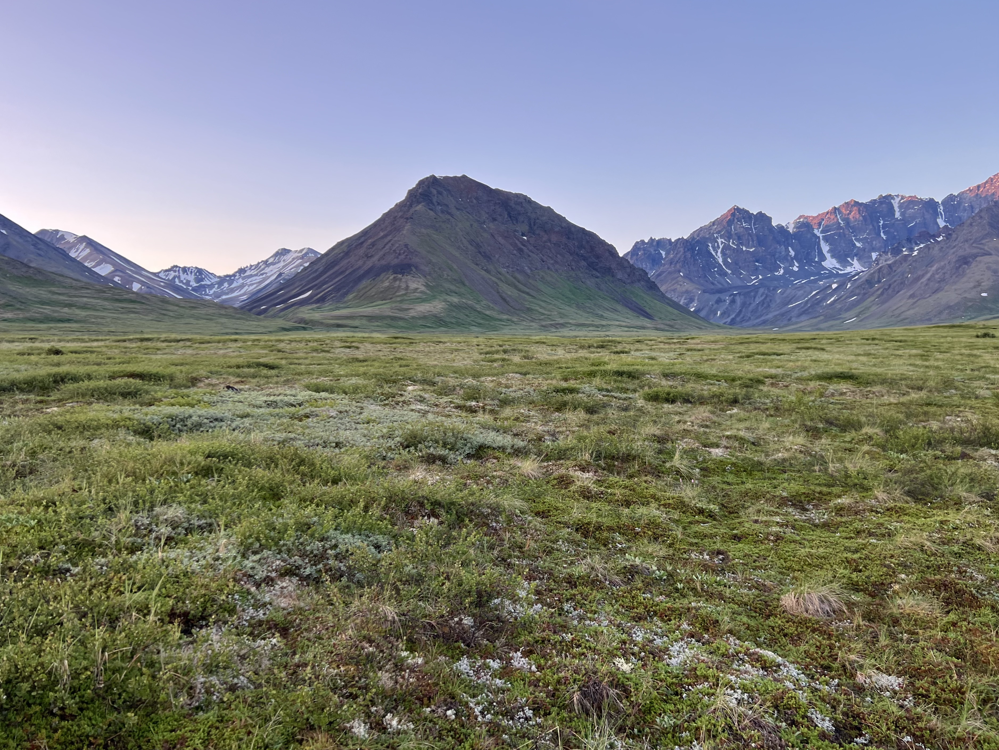

Backpacking Telaquana to Twin - Lake Clark National Park
Motivation
Normally we wouldn't be so thorough writing up a trip report (or write one at all), but we loved Lake Clark National Park. The planning for this trip was quite involved and the beta incredibly scarce. Hopefully this writeup helps someone in the future. This isn't intended to be a blog post. The majority of this page are notes I took each day on my phone.
Fuel and bear spray can be difficult to get into the park. Many flight proivders will not allow you to fly with them (even in checked baggage) on their planes. We purchased our fuel (isobutane canisters used by MSR Windburner/Pocket Rocket/Reactor and Jetboil) and our bear spray from the Cranberry Cache coffee shop at the Lake Clark Resort. The price markup wasn't terrible. $7.50 for a 4oz canister and $65 for bear spray (they were $5 and $50 in Anchorage). They were out of 8oz fuel canisters on our way into the park, but had them when we grabbed a coffee after finishing our backpacking trip. I would call to confirm they have what you need in stock before your trip.
How to Get to Lake Clark National Park and Travel Costs
To get to the park isn't trivial from Anchorage. For this particular trip, you'll need to fly into one of the nearby towns before taking a float plane to your intended starting lake. We chose to fly from Anchorage to Port Alsworth on a slightly larger plane that had 5 other passengers excluding the pilot. Then we took a 30 min float plane flight from Port Alsworth to Turquoise/Twin Lakes.
We chose to get to Lake Clark National Park through Lake Clark Air. This option was the simplest because they handle coordination of transport from Anchorage to Port Alsworth and then again from Port Alsworth to Anchorage. It was also convenient to be able to stay in Port Alsworth and relax before returning to Anchorage. There aren't many options for places to stay in Port Alsworth besides the Lake Clark Resort.
Travel information can be difficult to clarify from these providers' website. It's best to call/email them to get up to date information.
$4800 for 2 people. Mark offered a charter flying discounted rate of $800/hour for 6 hours of flying time. 1.5 hours Anchorage to Turquoise + 1.5 hours for pilot to fly back for both pickup and dropoff.
Alternative, $2,500 for 2 people (roughly $1,250 for the drop off and $1,250 for the pickup) from Iliamna to Turquoise. Transportation to Iliamna would have to be separate through Lake and Pen Air. This option was only available starting in August 2023 when Mark would be based out of Iliamna.
Food Storage
Ursack says that their products are not allowed in the park. NPS states that any IGBC-approved product is allowed as of 2023. Tried to confirm this fact with the Lake Clark rangers, but they weren't sure. Brought two BearVaults and accepted the weight penalty. There were almost no trees to attach your Ursack to on our route. A rodent might ruin your trip if you tie it to a boulder on the ground. I doubt the SAR team would be very happy if you SOS-ed because you had your food eaten by a rodent.
Trip Report
Conditions Leading up to our Trip
Southern Alaska received a historic amount of rain the weekend prior to our trip. We had been talking to Dan from Alaska Alpine Adventures while planning our trip (Dan is amazing) and he told us they were having an especially long winter. Lake Clark had only seen 8 days of sunshine leading up to our trip at the end of July. We prepared for a trip with highs in the mid-40s and rain everyday. Luckily we got southern Alaska's first sunny stretch for 6 straight days from days 3-8.
Day 1
Dropped off in evening. Somewhat inconvenient since we had to quickly go up the brushy hill to find a place to set up camp before nightfall
Telaquana beach is too narrow to camp on (only 1-2 feet between water and brush)
We were dropped off a half mile from second creek
Very wet ground once you go up into the brush
Thick bushwhacking but no deadfall to contend with
Scattered game trails, most of which go along the lake rather than up the hill
Flat-ish open terrain 1000 feet up
Rainstorm and somewhat windy. Made sure to guy out shelter for extra wind protection
Very soft ground. Used long MSR cyclone tent stakes and guyed to tree
Water access from a creek nearby but steep bank to get down to water. Lots of brush. Fast moving clear creek
Pretty warm temps overall. Sun set around midnight-1am and rose at 5am
Maybe trees for ursack. After this there are no more trees. We used two BearVaults.
Pictures

Map
Terrain
Only 1-2 feet of beach at Telaquana Lake
Very brushy and wet for the first mile up the hill from the lake
No good camp sites close to the lake, it is steep and brushy
Brush gets sparser as you move up the hill
We camped at the first decent place we could find as there was a storm coming that night
Weather
Temperatures in the 50s - 60s, clear when we flew in but we knew there was a storm approaching
Rained pretty hard, the forecast called for almost an inch of rain
Bugs
Lots of mosquitoes
Our camp site was near a hive of ground-dwelling bees who did not like our stake placements
Day 2
Continued up the hill, then dropped slightly into valley with trail creek
Stopped at a small pond for lunch
The ground was still pretty wet and slow going but less brushy as we got further from the lake. There were some sections with drier, less marshy ground as we gained elevation.
Trail creek was in flood and moving very fast. Camped by creek.
Selected a potential site for crossing, planned to attempt to cross early in the morning when the water would be lower.
Pictures
Map
Terrain
Occasional decent sized lake/pond for water
Followed game trail to plateau
Travel becomes significantly easier
No more trees from now on. Bear canisters only
Softish ground. Long stakes or MSR groundhogs would be fine
Slept on open plain. Mildly windy but ok. Low probably in 40s
Weather
Waited out rainstorm until 3pm
Light precip on and off throughout the day
Pretty warm. 50-60
Bugs
Lots of mosquitoes
Day 3
Woke up at 4:20am an hour before sunrise to pack up camp
Water in creek much calmer
Attempted to cross. Water still very fast. Water level came up past mid-thigh on my partner at one step and was going to get deeper so we retreated. I’m 6’1”. Partner is 5’2”.
Attempted multiple paths in a short period of time. Water is very cold. Eventually went back to shore with no safe crossing available. Warmed hot water bottle and broke out the safety blanket to warm our feet until sun broke onto valley floor
Set up camp again on south shore. Rested for a few hours. New camp was a few hundred feet away but sheltered by a hill. Rockier ground. Could pick smaller stakes here. More bugs but no wind and warmer. Not that the cold was a problem. Lows were in 50s
Scouted down river that day to see if river widened out
Warm sunny day 60s. No rain.
Saw a moose and some caribou
Lots of mosquitoes
Pictures

Map
N/A
Day 4
Woke up early to check river conditions. Didn’t pack up camp. Somewhat better. Rain flooding was calming. Not much snow in the mountains so high water was probably from rain and not all warming snowmelt. Still too high. Went back to bed.
Scouted upriver into valley today. Smaller creek crossings split off from each of the valleys. Still knee height or deeper in the afternoon but much narrower crossings.
Found some much more promising crossing sites 2-3 miles upriver. River was clearly flooded. Vegetation that normally wouldn’t be in water was submerged.
Warm weather again. 60s. No rain
Caribou encounter. Baby caribou ran off to our side in the distance. Parent stared at us. If we walked towards baby (didn’t notice the baby at first since it was a half mile away) then the parent would run towards us. If we walked away from baby then parent would retreat away to its child. Eventually we picked a direction the parent liked. We headed to much higher ground and gave a wide berth.
Lots of mosquitoes
Pictures
Map
N/A
Day 5
Woke up around 5am packed up and headed 2 miles upriver. Did the first small creek crossing just as sun hit the ground so we could warm our feet. Eventually saw one of our potential sites was looking decent. I scouted several beforehand but deemed them too deep for safety.
Crossed between multiple ankle deep submerged sandbars. Knee deep in deep sections with one step above the knee for me. Staggered with partner it was very manageable but probably approaching the limit. Still fast moving water. Got across and warmed up but since it was later and we were warm from hiking it was much better. Did a few more small creek crossings and then headed up hill for breakfast (9am)
Scouted a route that didn’t involve losing elevation and minimal backtracking.
Crossed high (4k feet) plateau with occasional cloud providing shade.
No rain. 60s and very warm in sun.
Camped at base of glacier. Sheltered by big boulder. Normal ground. A little rocky.
Windless night. Low in 50s. Spectacular view
Lots of rodents. One chewed my cork handles
Glacier water is very silty. Found a stream filtering through moss so we wouldn’t clog our filter.
Lots of mosquitoes even up here
Pictures
Map
Terrain
Travel was much easier as it was not very brushy
Once we got up the hill the the ground was drier and firmer with sparsely scattered rocks
There were several small creeks and other water sources as well as some small snow patches up on the plateau although this may be dependent on the time of year
Weather
Sunny, mid-60s
Not very windy on the plateau, but the wind picked up when we dropped down near the glacier
Bugs
Still lots of mosquitoes even up here, although less than previous camp sites
Day 6
Descended from 4000 foot camp down to Turquoise Lake
Brief climb up creek/boulder field then descent down valley
Valley has very good ground for travel
Possible camp spot at top of valley. Could be windy, but would have water access
Bottom of valley before descent to turquoise has amazing view. Make sure to take pictures
Take pictures of current creek paths for use when crossing later if running high
Can descend gentler slopes but will face a couple thousand feet of very thick brush. 8 foot high alder bushes. If following our track you will be walking down a muddy creek
Alternative route is to head east staying high across some mildly steeper traversing and then descend a less vegetated ridge
Lots of amazing camp spots on valley floor at east end of turquoise
Excellent weather. 60s and sunny
Turquoise stream crossings were a non issue. Water is warmer and was running less strong/deep for us.
Camped on north side of valley. Sandy with large river rocks.
Less silty water in creeks on either side of the valley near vegetation. Filtering silty water can clog water filters
Pictures
Map
Terrain
Climb up the boulder field can be tedious. Most of the rocks were pretty stable but not all. Lots of rapidly melting snow was easy to punch through to the rocks below.
Past the boulder field it became much windier
Ground was stable gravel, very easy travel even as we dropped 2000 ft until brush section.
Very thick brush. Descended down a creek to avoid alder bushes.
Weather
60s and sunny
not very windy near turquoise river
Bugs
Less mosquitoes near Turquoise, mostly located along the edge of the valley near the vegetation
Day 7
Turquoise creeks not running high previous evening so we took it easy and crossed them around lunch time when it was warm.
No issues crossing. Lots of great crossing options below the knee and water speed at walking/jogging pace while we were there. We walked around a bit to cross smaller streams but it was pretty straightforward. Very nice compared to Trail Creek being in flood.
River is very silty so it is difficult to determine depth by eye, we used our treking poles to estimate the depth before we entered
Valley 1 looked like it was in great condition and would’ve been a good alternative way through the mountains. We wanted to see the tundra
Headed west along south shore of turquoise
Less brush on south side compared to north
Very nice game trail for first portion
Dropped to a pretty beach midway and filtered water
Scared a brown bear that we ran into when we came over a ridge. It ran away as fast as it could. Good visibility so we never ended up too close to it
We would recommend going higher than our track for this portion. Crossing the ravines full of alders can be tedious and we ran into a lot of bees
Camped on spit jutting out into turquoise. Highly recommended campsite. It’s worth braving the tussocks and obnoxious ground to get there!
Soft but not overly soft ground. Easy stake placement
No rain. 60s/50s. Quite hot and sunny
Pictures
Map
Terrain
Less brush on this side compared with the other side of Turquoise
Ravines were very brushy and slow going, recommend going higher on the hill to avoid them
Weather
60s and sunny
Bugs
Ravines are full of mosquitoes and bees
Less mosquitoes at this campsite than I would have expected considering how boggy the surrounding area is
Day 8
Getting off the spit involves either bushes or boggy tussocks. Only about 15-30 min of this then freedom
Ascend slope to high plateau. Very easy travel
Plateau is beautiful. A bit windy as you’d expect
Creek in middle of two plateaus very easy to cross. Pretty too
Descend towards twin. Prepare for brush and a new level of mosquitoes. See your first trees since turquoise
Surprisingly clear and easy travel through trees. Make noise for bears. Visibility greatly reduced
Minimal deadfall in trees. Travel very easy
It’s hilly down there. Occasionally you’ll get a viewpoint to aid in navigation
Slept above northwest beach of lower twin. Lots of good sites
Windstorm that night. Pitched tarp in good ground using MSR cyclones and guyed out to nearby trees
Temps still in 60s/50s
Pictures
Map
Terrain
First section is boggy, no dry shoes today
Plateau is flat and windy. The ground is dry and firm with small rocks
Small creek in the middle of the plateau section was not very deep or fast, easy to cross
Starts to get brushy as you get close to Lower Twin Lake
Once the trees start the brush clears out a little bit. I wouldn't call it fast travel, but less brushy and less down trees than we expected
Weather
60s and sunny
Bugs
Not very buggy on the plateau
Extremely buggy in the forest near Lower Twin Lake
Day 9
Bonus hike down to connecting stream between lower and upper twin
High winds from the east mean float plane can’t pick up from west shore of the lakes. Waves would push them into the shore
Navigated from rocky patch to rocky patch using CalTopo on the fly
A bit rainy and overcast today
Took us ~3.5 hours for 6 miles of travel. 4.5 miles as crow flies. Weaved around and avoided the worst of the brush
Communicated with pilot as we moved along. Original pickup was 10am on northwest shore of lower twin. Pilot picked us up at 2pm at connecting stream. We waited maybe 5 minutes on shore. Excellent timing on their part anticipating our arrival
25 min flight back to Port Alsworth
Map
Terrain
Can't walk along lake as the beach is not continuous
Brushy in general, interspersed with drier patches especially on ridges or small hills
Weather
Overcast, high 50s
Storm in forcast for tomorrow, >1 inch of rain expected
Bugs
Not as buggy as the approach to Twin yesterday, but still plenty of mosquitoes
Post-Trip
Spoke with ranger. They didn't know if ursacks were allowed or not…
If you would like to do this trip but aren't sure if you're ready for backcountry travel on your own (or you don't want to deal with the logistics) we recommend using Alaska Alpine Adventures. Dan (the owner) was an amazing resource for us. He went above and beyond giving us beta and up to date area conditions. Considering flight costs and Port Alsworth hotel prices, Dan's guided trips are a steal.
We packed for a significantly colder trip based on the extended winter Alaska was having right up until the week we arrived.
You almost certainly do not need a belay puffy. My partner gets cold easily and the extra weight is easy comfort insurance for such a long trip.
Normally we wouldn't bring electronic entertainment, however there was a potential for us to be rained-in for multiple days.
This pack list is for two people. All gear quantities are correct with the exception that I didn't list my partner's clothing choices. These are just my clothing choices.
Typically I would say this much redundancy is overkill. However, since there was only two of us and we would be alone for 9 days without an easy bail option, we opted to carry the extra couple pounds.
Redundant items for safety:
2 water filters
Glacier silt can clog a filter quickly.
2 Garmin inReach
Need a way to contact pilot for pickup.
4 bug head nets (2 per person)
This was a Skurka tip. If you rip/lose your headnet you might as well hit that SOS button on the inReach.
Rain Pants
Even if you don't use them for the rain you'll want them for the mosquitoes at dinner.
2 backup batteries
Probably only need one. We wanted to make sure we could record GPX tracks without comprimising a battery backup used for safety purposes (such as recharging the inReach).
2 stoves
We debated whether this was necessary since we could always just cold-soak our food. Opted to just carry it because boiling hot water for warmth can be critical in an emergency.
3 Voile straps
Hyperlite Ultamid requires two straps minimum to set up
2 Kindles
We could always just bring one and read over the other person's shoulder. My partner reads at least twice as fast as me so we decided to bring separate kindles.
4 4oz isopro fuel cansisters
We planned to use slightly over 1 8oz container for 9 days. That meant we would carry 2 8 oz containers. Port Alsworth only had 4 oz containers and rather than modify our calculations at the last moment we decided to stick with the original plan of 16 oz of fuel for the trip. We used 1 4 oz container fully and another one mostly. We gave the last two to the rangers. We never needed to boil hot water for warmth and we drank our coffee cold because it was so warm out every morning.
Extra/multiple kinds of tent stakes
This route has really varied ground for camp. Alaska can be windy. This was easy extra weight to swallow.
Bring some long stakes like the MSR Cyclones or MSR Blizzards. The tundra can be very loose at the surface.